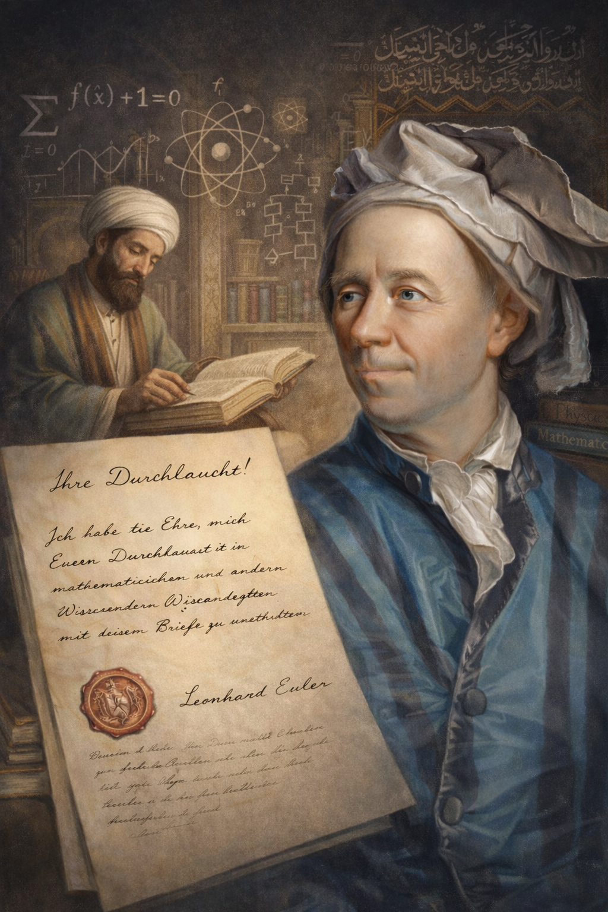

Introduction

Who we are
Euler Letters AI is led by Samer El Kababji, Assistant Professor in the Data Science Department at Princess Sumaya University for Technology (PSUT). The lab hosts multidisciplinary repositories for research projects that benefit from open methods, reproducible pipelines, and clear documentation.
We keep sensitive datasets out of public repositories and publish responsibly, especially in medical contexts. We also maintain practical project notes, so each repository tells a full story from data assumptions to model limits. We follow good practices in software engineering, data science, and AI research.
Inspiration and continuity
The name is inspired by Leonhard Euler's Letters to a German Princess, on Different Subjects in Physics and Philosophy. In those letters, Euler moves across mathematics, mechanics, astronomy, optics, electricity, physics, natural philosophy, metaphysics, and moral reflection while keeping the tone clear and teachable. What matters for us is not merely Euler's technical range, but the discipline of explaining complex ideas in a way that connects fields without flattening them.
This polymath mentality is not limited to one civilization. It is part of a wider history of scholars who treated knowledge as a connected enterprise. In the Islamic intellectual tradition, for example, Fakhr al-Din al-Razi wrote across theology, logic, philosophy, metaphysics, cosmology, and the study of nature. His al-Mabahith al-Mashriqiyya fi 'Ilm al-Ilahiyyat wa-al-Tabi'iyyat (The Eastern Investigations) brings together metaphysics and physics, while his al-Matalib al-'Aliya min al-'Ilm al-Ilahi (The Higher Pursuits of Theology) reflects a broad theological and philosophical inquiry into creation, cosmology, and the structure of reality.
Euler Letters AI adopts this cross-cultural continuity as a working model. Modern AI research often sits at the intersection of algorithms, statistics, software engineering, data pipelines, ethics, and the domain being served. A useful AI lab therefore needs more than code: it needs the habit of moving across disciplines while documenting assumptions, limits, and evidence.
AI makes this comprehensive vision more practical than ever. Well-designed AI agents can help researchers search across fields, compare arguments, test assumptions, and preserve technical precision while moving between levels of abstraction. The goal is not to replace disciplinary expertise, but to extend it: to let scholars reason at a higher level while still grounding conclusions in accurate methods, traceable evidence, and domain-specific constraints.
In this sense, AI can help reconnect philosophical and scientific pursuits. It can support a mode of inquiry where questions about knowledge, causality, explanation, uncertainty, time, nature, and human judgment are not isolated from computation and empirical modeling. Euler Letters AI is built around that possibility: using AI to widen understanding without sacrificing rigor.
Lab objective
In that spirit, the lab develops reproducible AI pipelines that connect data engineering, model development, evaluation, interpretability, and deployment-minded experimentation. Our work applies AI across engineering and medical contexts, including synthetic data generation, time series, signals, sensor systems, predictive modeling, and decision support with domain constraints in mind.
The public repositories are meant to serve both research and teaching: clean examples, tutorials, and practical notes that help students and researchers learn by building. We adopt a letters mindset: explain assumptions, define terms, and document reasoning so outcomes are reusable, not just impressive demos.
"I shall endeavor to explain everything with the greatest possible clarity..." - Euler, Letters to a German Princess
Note: The pull quote is thematic; see References for source details.